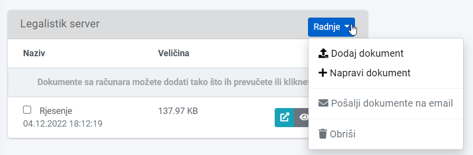
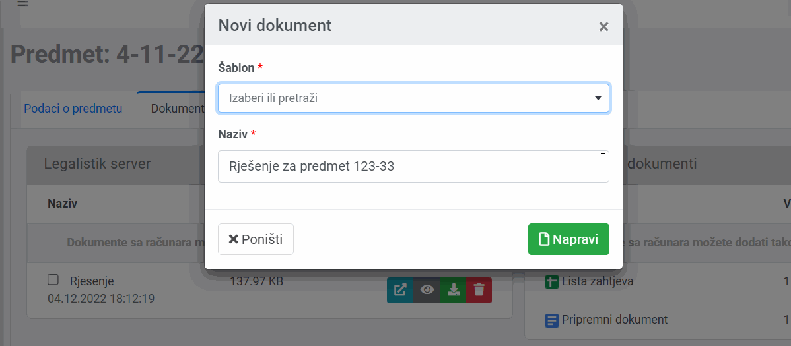
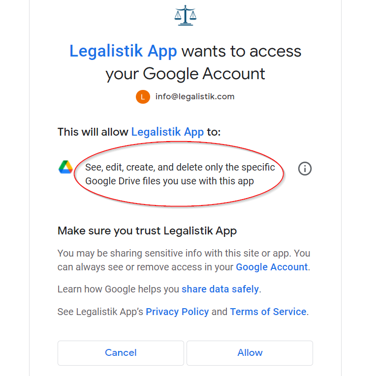
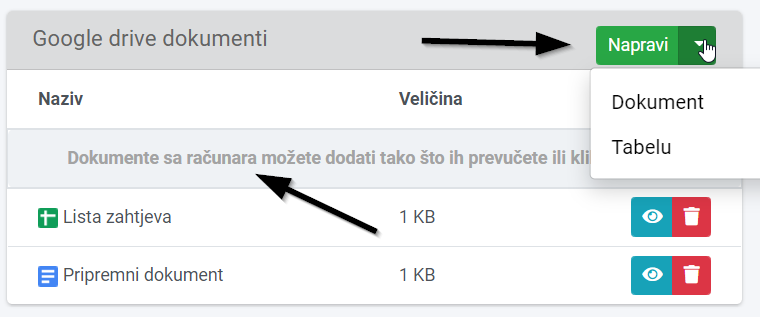

Dokumenti vam omogućuju da dodajete svoje ili generišete dokumente unutar Legalistik aplikacije putem šablona.
Dokumentima pristupate ili u Dokumenti linku u meniju na lijevoj strani, gdje su dokumenti grupisani po predmetu:


Takođe, možete kombinovati dokumente i na Legalistik serverima i na Google Drive-u.
Dodavanje pripremljenih dokumenata na Legalistik servere se vrši prevlačenjem ili klikom iznad liste dokumenata ili na dugme Dodaj dokument:

Ako želite da napravite dokument direktno na serveru, pomoću unaprijed dodanog šablona (šablone dodajete unutar Podešavanja – Šabloni dokumenata, u meniju na lijevoj strani), kliknite na Napravi dokument, izaberite šablon i naziv dokumenta:


Potvrdite povezivanje (Allow dugme):

Treba napomenuti da Legalistik aplikacija ima pristup samo dokumentima koji su dodani preko same Legalistik aplikacije, ne ostalim dokumentima na Google Drive-u.
Nakon toga možete upravljati dokumentima na Drive-u kao da i sa lokalnim dokumentima unutar Legalistik aplikacije:
